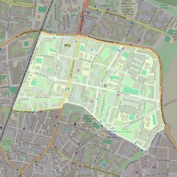

San Juan Bautista
- Arciprestazgo
- Fuenlabrada
- Población
- Fuenlabrada
- Dirección postal
- c/ Cuzco, 15
- Código postal
- 28945
- Extensión
- 0,73 km² (73 ha)
- Teléfono
- 916 906 168
- Correo electrónico
- sanjuanbautista-fuenlabrada@diocesisgetafe.es
- Información demográfica
- De la parroquia · De la población (Fuenlabrada) · Del arciprestazgo (Fuenlabrada)


Descargar mapaLímites según decreto
“Partiendo de la intersección de la calle Málaga con el ferrocarril Madrid-Portugal, arrancan por el eje de las vías de dicho ferrocarril (en dirección noreste) hasta el término municipal de Leganés; continúan por los límites de los términos municipales de Fuenlabrada y Leganés (en dirección este); por los límites de los términos municipales de Fuenlabrada y Getafe (en dirección sureste); por una línea recta imaginaria hasta la calle Brasil (en dirección oeste); por el eje de la calle Brasil (en dirección suroeste); por el eje de la Avenida de los Estados (en dirección noroeste); por el eje de la calle de Leganés (en dirección suroeste); y por el eje de la calle Málaga (en dirección oeste) hasta la confluencia con el ferrocarril Madrid-Portugal, punto de partida”.